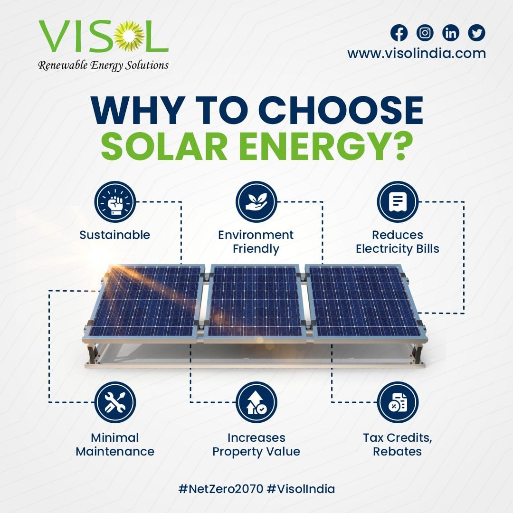
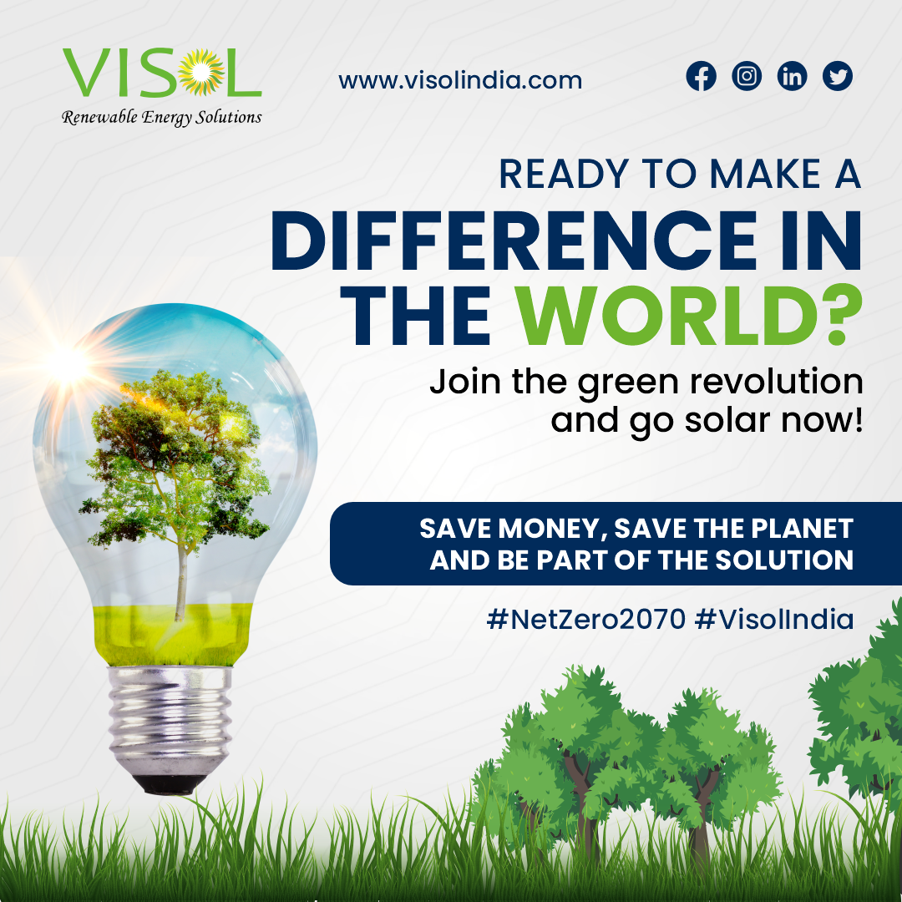
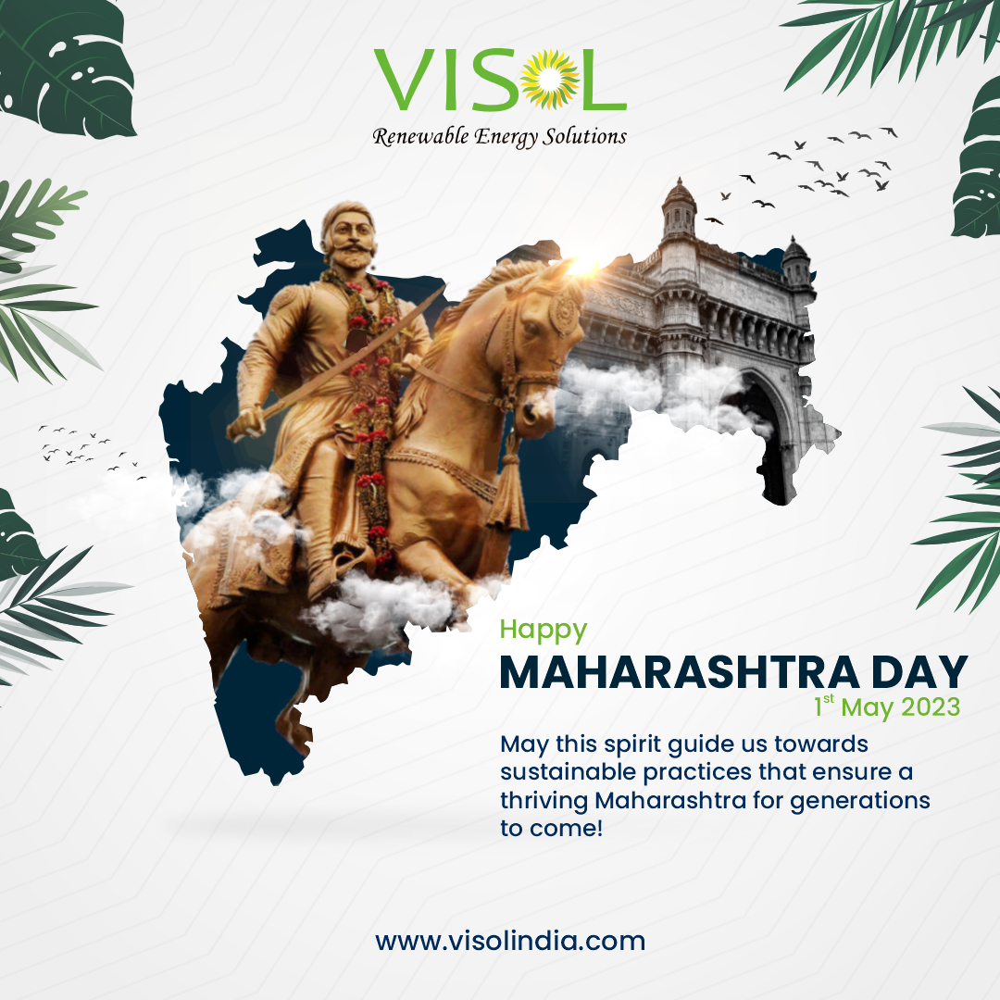
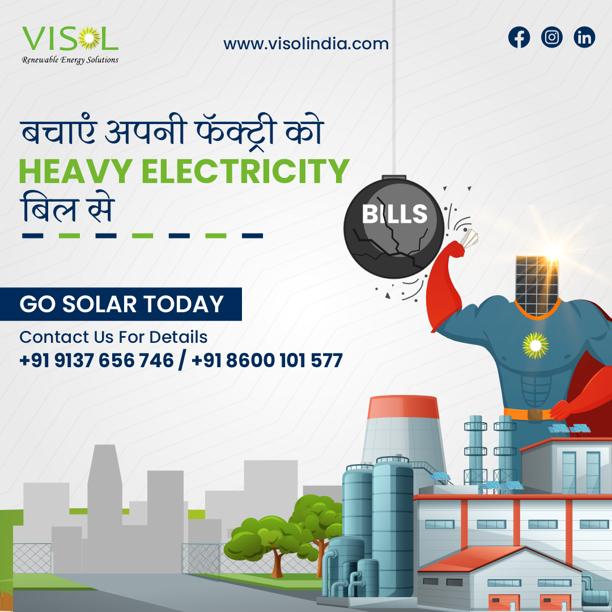

Client
Visol India
Visol India
Social Media Creatives
Brand communication, campaign creatives, carousel posts, and digital visuals
Graphic Designer
The project required creating social media designs that looked professional, communicated clearly, and remained visually consistent across multiple posts and campaign formats.
I started by understanding the brand tone, audience, message, and the purpose behind each creative.
I focused on creating a consistent visual direction across posts, campaigns, and carousel formats.
I shaped each creative to communicate quickly, stay clear, and feel engaging in a social feed.
I polished spacing, hierarchy, readability, and final presentation for social media use.




The final creatives helped establish a cleaner and more consistent social media presence while keeping the brand communication clear and visually engaging.
If you need campaign creatives, carousel posts, or brand-focused social media designs, I would love to collaborate.